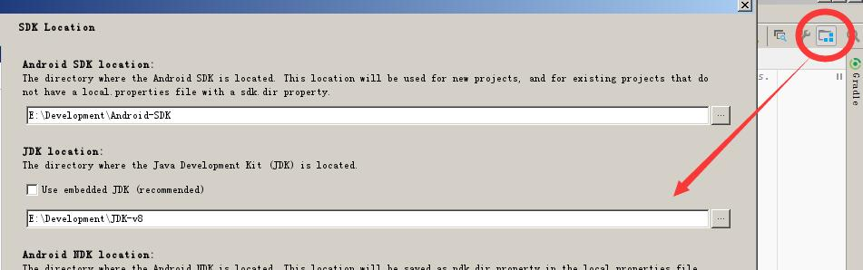
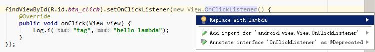

2017-06-02 | Android android, java8, lambda, retrolambda
Lambda表达式是一个看上去很难懂的语法糖，目前有一种趋势表明它越来越火，各种语言都开始支持Lambda表达式。即使你不使用这种语法糖，你也应该去学习了解，否则你可能看不懂很多代码。
不过由于Java8才引入Lambda表达式，而Android Studio一直都是嵌入JDK(Java Development Kit)1.7，自然要在Android Studio上使用Lamda表达式，这时候只能靠开源力量，自然就有Retrolambda这个Gradle插件。
当然Lambda的好处、缺点这里就不解析了，当然我认为无论你是否使用，Lambda也是需要学习的一个语法糖。本文为了方便阅读，尽可能避免会涉及到其他Java8的新特性。
首先需要使用Lambda，你要有一个JDK(Java Development Kit)1.8，修改你的项目JDK版本为1.8及以上的版本，如下图所示：  接下来需要在Application的build.gradle中添加Retrolambda插件(来自mavenCentral依赖库)：
buildscript {
repositories {
mavenCentral()
//...
}
dependencies {
classpath 'me.tatarka:gradle-retrolambda:3.6.1'
//...
}
}
allprojects {
repositories {
mavenCentral()
//...
}
}
然后在需要用用到lambda的模块，比如app模块中的build.gradle文件中设置插件和编译Java版本：
//...
apply plugin: 'me.tatarka.retrolambda'
android {
//...
compileOptions {
sourceCompatibility JavaVersion.VERSION_1_8
targetCompatibility JavaVersion.VERSION_1_8
}
}
如果你的项目使用了混淆，可以添加：
-dontwarn java.lang.invoke.*
-dontwarn **$$Lambda$*
完成了上述操作后执行Gradle Sync然后尝试运行App无误后就代表环境搭建完成。
注：如果你使用新版的Android Studo和Gradle，你只需要配置JDK和设置compileOptions即可，无需引入插件。
由于我们现在不懂Lambda表达，所以我们让Android Studio给我们转换出Lambda表达式。假设我们写了一个点击监听器代码：
//匿名内部类写法
findViewById(R.id.btn_click).setOnClickListener(new View.OnClickListener() {
@Override
public void onClick(View view) {
Log.i("tag","hello lambda");
}
});
会发现插件提示可以转换成Lambda表达式，使用自动完成提示快捷键，选择“Replace with lambda”自动转成Lambda表达式：  最后变成如下的写法：
//转成lambda表达式写法
findViewById(R.id.btn_click)
.setOnClickListener(view -> Log.i("tag","hello lambda"));
看上去代码精简了不少，下面我们来学习下Lambda表达式的语法。
Lambda表达式无论怎么变化，都有一个基本的形式：
(参数) -> {表达式}
其中符号->是不变的，
参数的变化情况：
() -> expparam -> exp（自动推导参数类型，可省略()括号）(param1,param2) -> exp（自动推导参数类型）(int param1,int param2) -> exp（不能自动推导参数类型）表达式的变化情况：
param -> {}param -> exp（可忽略{}括号，返回表达式也可以省略return）param -> {exp1;exp2;}(表达式可以是return语句)上述的表达方法可能有些抽象，下面我们来举个例子说明下。 就拿前面我们转换出来的Lambda表达式为例：
view -> Log.i("tag","hello lambda")
这里的view属于参数，Log.i("tag","hello lambda")属于表达式，其中参数属于单一参数，表达式属于单行表达式，所以省略了()和{}这两个括号。
我们探讨一下为什么可以这样写，首先这个方法setOnClickListener接收的匿名内部了已经是固定View.OnClickListener类型，而这个接口也只有onClick一个方法，而注解@Override本身也可以忽略的，也就是说这些都是可以忽略推导出来的，自然就可以写成(参数) -> {表达式}的形式了。也许细心的朋友会问：返回值呢？这我就反问还记得Java的方法签名吗？Java的方法签名中，返回值是无关变量，也就是返回值可以通过方法名和参数列表来确定，这也是为什么重载时不能单一改变方法返回值的原因。
下面我们看一个带泛型的例子：
List<Integer> list = new ArrayList<>();
//匿名内部类形式
Collections.sort(list, new Comparator<Integer>() {
@Override
public int compare(Integer a, Integer b) {
return a-b;
}
});
//Lambda写法
Collections.sort(list, (a, b) -> a - b);
上面的Collections.sort方法泛型<T>是可以根据list的泛型进行推导的，自然lambda表达式就无需泛型声明，而对于单一return表达式{return a-b;}也是可以省略掉return、分号和括号的。关于Comparator接口，大家会发现他不只有一个方法，但是仅仅只有compare方法是必须实现的，也就是当这个匿名内部类只有一个方法的时候，必然是compare方法，当有两个方法的时候也不能使用lambda表达式了。
上面说到Comparator接口只有一个抽象方法需要实现，这样的接口在Java 8中称为函数式接口。在Java 8之后的源码中，这样的接口都会使用@FunctionalInterface这个注解去标注。可以查看这个注解的注释，其中写到：
Conceptually, a functional interface has exactly one abstract method. Since {@linkplain java.lang.reflect.Method#isDefault() default methods} have an implementation, they are not abstract. If an interface declares an abstract method overriding one of the public methods of {@code java.lang.Object}, that also does not count toward the interface's abstract method count since any implementation of the interface will have an implementation from {@code java.lang.Object} or elsewhere.
简单说明一下就是指函数式接口只能有一个抽象方法是不包括default标记的方法（有默认实现）和Object中已有的方法。所以回去看看Comparator接口的源码，它既包含boolean equals(Object obj);这种Object中已有的方法，也包含default标记的方法。但是只有compare这样一个抽象方法是必须实现的。
Lambda表达式除了可以作为参数，也可以作为变量赋值：
OnClickListener listener = x -> Log.i("tag", "msg");
btnClick.setOnClickListener(listener);
Lambda表达式的返回值不一定是函数式接口。
下面我们来研究lambda表达式中变量作用域，比如说访问外部的类型：
int a = 1;
btnClick.setOnClickListener(x -> Log.i("tag", String.valueOf(a)));
由于Java8的新特性Effectively final，所以lambda表达式可以直接访问外部变量而不需要加final，但这个变量不能够修改，否则IDE报错。
另外lambda表达式中的()中的参数名不能与外部变量同名，否则IDE报错。
对于lambda表达式的this是代表对应的外部类，而不代表匿名内部类本身（这和匿名内部类是不一样的），举个例子说明下：
public class MainActivity extends AppCompatActivity {
@Override
protected void onCreate(Bundle savedInstanceState) {
//...
btnClick.setOnClickListener(x -> {
Log.i("tag", this.toString());//这里的this代表MainActivity
});
}
}
使用lambda表达式的时候千万要注意变量的作用域。
下面我们学习一种lambda表达式简化形式，先举个例子：
List<Integer> list = new ArrayList<>();
//Lambda基本表达式
Collections.sort(list, (a, b) -> a.compareTo(b));
//方法引用
Collections.sort(list, Integer::compareTo);
方法引用的基本形式就是：
类名::方法名
方法的()没什么意义，所以不需要写，而对于这个形式可能出现的情况包括：
对象::实例方法类::静态方法类型对象::实例方法 比如说上面的Integer::compareTo就属于类型对象::实例方法这种。再举个例子，比如说System.out::println这种就是属于类::静态方法的形式。
怎么推导？我们从简化过程来一步步说明。就以上面(a, b) -> a.compareTo(b)这个例子:
(a, b) -> a.compareTo(b) //原始lambda表达式
//↓↓↓
(a, b) -> Integer.compareTo(b) //compareTo属于Integer类型对象的方法
//↓↓↓
(a, b) -> Integer.compareTo //a、b有顺序，"(b)"可以省略
//↓↓↓
Integer.compareTo //没有使用参数副号，"(a, b) -> "都可以省略
//↓↓↓
Integer::compareTo //为了区分，使用::符号
另外，如果lambda表达式可以转换成方法引用，Android Studio也是会提示的。一般只用到一个已存在的方法并且没有额外的参数就可以使用方法引用来表示lambda表达式。
下面介绍构造方法引用，实际上有人也把它归为方法引用，因为他的形式是一样的，只是::符号后面跟的方法名变成固定的new，即：
类名::new
这个举例子通常用到新的API，为了防止陌生面孔出现，我们这里通过自定义例子来说明，首先要定义函数式接口，因为方法引用的参数肯定是函数式接口：
@FunctionalInterface
public interface Wrapper<T> {//对应Java8中提供的Supplier
T get();
}
然后写一个打印字符串是否为空的方法（仅仅为了说明，简单化例子）：
private <T extends String> void printIsEmpty(Wrapper<T> wrapper) {
Log.i("tag", wrapper.get().isEmpty() ? "yes" : "no");
}
然后调用方法写法：
//匿名内部类
printIsEmpty(new Wrapper<String>() {
@Override
public String get() {
return new String();
}
});
//lambda表达式原始写法
printIsEmpty(() -> new String());
//构造方法引用写法
printIsEmpty(String::new);
注意的是，还有一种构造方法引用是数组型的：
类名[]::new
比如说String[]::new，这里就不举详细的例子了。
以上就是Android中使用Lambda表达式的内容，目前由于版本问题，尚未得到普及，不过例如RxJava等一些框架的文章大部分是使用Lambda表达式的形式说明，所以建议还是需要认真学一学，至少能读懂别人写的吧，至于使用不使用那又是另一回事。
原创文章，欢迎转载，请保留出处。有任何错误、疑问或者建议，欢迎指出。
请注明文章出自于：https://maxwell-nc.github.io/android/retrolambda.html